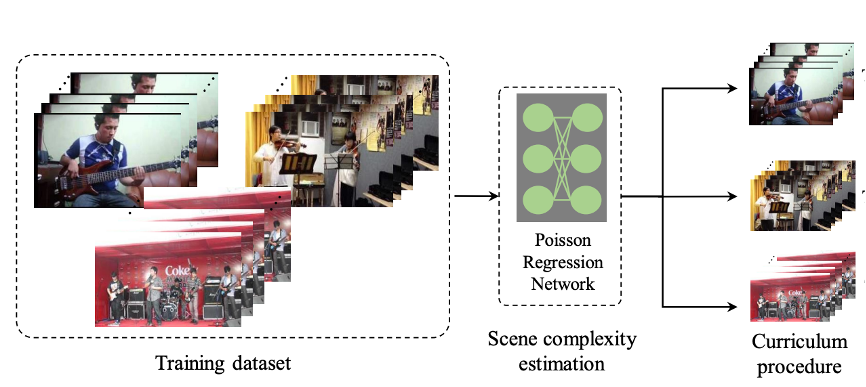
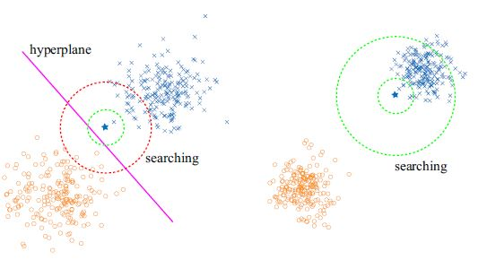

|
Publications
Preprint
Conference Paper
Journal Paper
|  |
Self-supervised Learning for Heterogeneous Audiovisual Scene Analysis
Di Hu, Zheng Wang, Feiping Nie, Rong Wang, Xuelong Li
IEEE TRANSACTIONS ON MULTIMEDIA (TMM) 2022 |
|  |
Generalising Combinatorial Discriminant Analysis through Conditioning Truncated Rayleigh Flow
Sijia Yang, Haoyi Xiong, Di Hu, Kaibo Xu, Licheng Wang, Peizhen Zhu, Zeyi Sun.
Knowledge and Information Systems (KAIS) 2021 |
Workshop Paper
|